スリ・スリニバサ・ペルマル寺院 SriSrinivasaPermalTemple
今回、シンガポール行きにあたって楽しみにしていのがヒンズー教の寺院が見られる、という事だった。 シンガポールには多くのインド人が住んでいてたくさんのヒンズー寺院がある。ヒンズー寺院未体験の私としては是非、見てみたかったのだ。 派手な色彩でめっちゃパンチ効いた神様、やたら大袈裟な表現様式、その全てのベクトルが明らかに「珍」方向を向いているとしか思えないからだ。もしかしたら仏教よりもヒンズー教の寺にこそ珍寺は多いのかも知れない。などと期待していたのだ。 そしてシンガポールのライトなヒンズーお試し体験で、将来インドに行くかどうかを決めよう、という目論見であった。 さて、そんな記念すべきヒンズー教初体験はスリ・スリニバサ・ペルマル寺院。 1855年創設の老舗だが建物は1966年に建てられたという。 もう、あまりの興奮と緊張で足がガクガク・・・というのは大ウソで早く目が覚めたので散歩がてらペタペタとサンダル履きで行って来ました。 ヒンズー教のお寺といばまず最初に思い浮かぶのが、ゴープラムという色とりどりの神像がぐちゃぐちゃ乗っている高〜い門。 しかし、1979年に出来たというここのゴープラムは改装中で、シートが架かっていて見えませんでした。 ただいま朝の6時。明るくなるのが朝の7時過ぎ、という1月のシンガポールではハッキリいってまだ真っ暗である。 しかし寺の周りにはインドの兄貴達がぞろぞろとやってくるのだ。 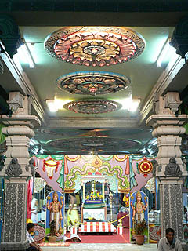 ゴープラムを潜るとそこは未知なるヒンズー世界。しかも早朝ということもあって観光客がいないどころか私以外全員インド人。マジ拝み率10000パーセントのインドの兄貴達の中に靴を脱ぎ、カメラぶら下げて突入すると注目度も10000パーセント。カメラのレンズが割れるんじゃないかというくらい、熱い視線を浴びまくりました。うひゃ〜エライとこ来ちゃったなあ〜。もしかして俺、邪魔？と一瞬怯んだが、皆さんの表情は明らかに「朝から物好きな奴が来たぞ〜」といった半笑い顔なので一安心。 で、寺の様子を見てみる。 お寺の構造的にいうとゴープラムは独立した門ではなく、いわゆる本尊がある本堂とつながって一体化しており、門と本尊は一直線上にあり、中心軸が強く意識されているように思える。 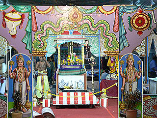 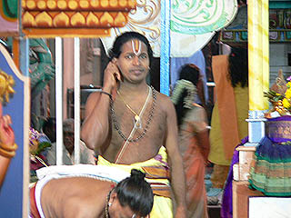 門を潜るとすぐに見えるのが、厨子のようなものに入った神像を祭るスペース。前神といったところなのだろうか。 新年だからなのかどうかは知らないが、やけに飾り付けられていて、上半身裸の行者さん（ヒンズーの坊さん？）らしき人が拝んでました。 その後ろには本尊が祭られていて、こちらには早朝にもかかわらず大勢の人達が並んでいる。 その先には派手な衣装と飾りをあしらった神像があったが、本体が真っ黒なので何の神様か良く判らなかった。 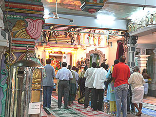 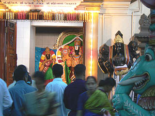 天井や柱、欄間（？）などにも様々な装飾が施されている。 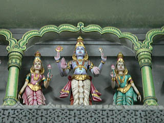 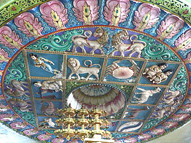 本堂（正確には何というのかは知らない）やその周辺の祠に祭られている神像は真っ黒のものが多かった。 逆に建物の装飾的な要素の強い神像は派手で見た目にも愉快だ。 「真面目に信仰している神様には畏れ多くて色なんか塗れませんわ」という「偉い程地味」的な考え方でもあるのだろうか。 周りの神像が派手なだけに祠の中の神像の黒さが際立ってました。 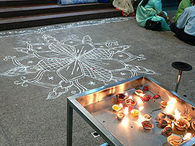 床に石灰で描かれた模様が砂曼荼羅を彷佛とさせて印象的だった。踏まないように、踏まないように。 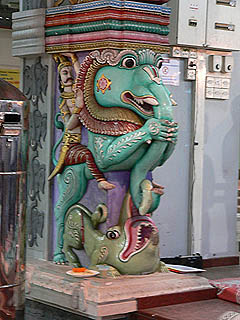 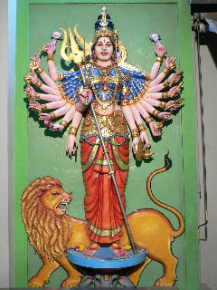 柱や壁にはかなりハッピーな装飾が多い。象に乗っているオヤジ様はロデオみたいな事になっちゃってます。 ライオンに乗るのはヒンズーの千手観音？ 祠の屋根もこんな感じです。 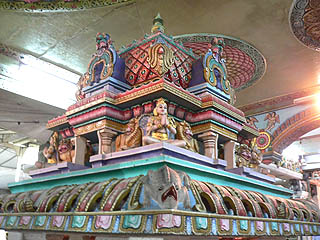 結論として私のヒンズー教ファーストインプレッションは想像していたよりは違和感はなかった。 勿論、インド人ではないので浮きまくってはいたが、ビジュアル的に拒否反応はなかった。 意外に思えたのは、想像していたよりもインパクトが強くなかった、というか自分でも不思議な位に馴染んでスルっと入って行けた。 よく仏教とヒンズー教は兄弟みたいなものだ、といわれるが確かに雰囲気がかなり仏教寺院に似ているのだ。 基本的な装飾のエレメントや派手な色彩、ハッピー感、味濃い感、大袈裟感といった宗教的表現のノリは特にミャンマーの仏教寺院と共通する点が多いと思った。 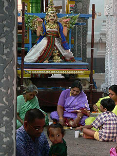 境内の片隅でお寺が朝食を配っていた。それを神様の前で食する皆さん。本堂で食事をするというのは私には面白い光景に映った。 メニューは勿論カレー。 近くにいた兄貴達に「お前も食べてけ」と言われたが、朝からカレーはチョット・・・
次のスポットへGO！ 馬来半島珍寺伝説
珍寺大道場 HOME